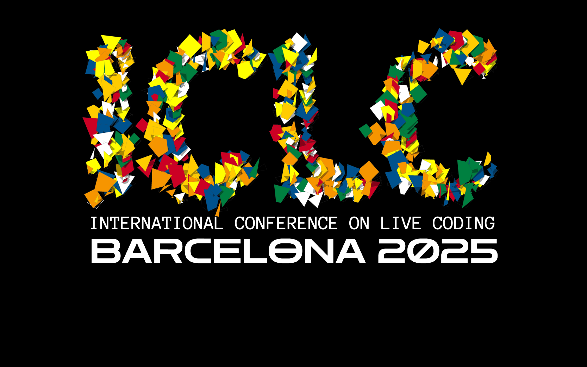

Computational Sonic Arts
Laboratory
The lab aims to become a research hub in developing sustainable,
inclusive, and forward-thinking technologies that transform how we
create, experience, and understand music.
The Computational Sonic Arts Laboratory is a research team based in
the Centre for Digital
Music (C4DM) at Queen Mary University of London dedicated to
advancing the intersection of sonic arts and cutting-edge technology.
The lab is led by Dr Anna
Xambó Sedó and has been founded in 2025 as part of QMUL’s Centre for
Digital Music.
Rooted in principles of culture,
creativity, and community, the lab
explores sonic creativities and creative
computing through innovative research in creative
AI, music AI, and intelligent music
systems. The vision of the lab is to bridge
HCI, sound and music computing, and
new interfaces for musical expression, by emphasising
live coding, network music, and
generative sound-based music. The lab aims to become a
research hub in developing sustainable, inclusive, and forward-thinking
technologies that transform how we create, experience, and understand
music.
Research activities include:
- The design, deployment and evaluation of intelligent sound-based
music systems that keep the human in the loop and give ownership to
communities of practice and perspectives generally underrepresented in
music AI.
- The creation of sound-based music performances and sonic arts
experiences that foster democratic principles in music making and raise
awareness of real-world problems.
- The design and development of sustainable and DIY systems based on
interdisciplinary methods involving art, science and engineering and in
alignment with open source, open hardware, citizen science and the Maker’s
Bill of Rights.
The lab hosts the AHRC-funded project Sensing the Forest - Let the
Forest Speak using the Internet of Things, Acoustic Ecology and Creative
AI, which pursues raising awareness and understanding of forest
environmental data and how they relate to climate change.
Please, get in touch if you are interested in PhD opportunities. The
Centre for Digital Music of Queen Mary University of London welcomes PhD
applications for 2025.
News
May 2025
 ICLC 2025
logo
CSAL’s Anna Xambó will be giving a keynote on Wednesday 28 May
16:30-17:30 on “Liveness as an open work: an ongoing live-coding
algorithmic journey” at the International Conference on Live Coding
(ICLC).
On Thursday 29 May she will also deliver the paper co-authored paper
“Building
a Dataset of Personal Live Coding Style Using MIRLCaProxy - A Journal of
Creative Sonic Exploration under Constraints and Biases” and will
perform in the evening the live-coding session “Sensing
the Alice Holt Forest”.
For more info visit: https://iclc.toplap.org/2025/
BSc student Stanley
Parker wins a hackathon
 BlueCrabs team at the Open Sea
Lab 4.0 Hackathon
BlueCrabs team at the Open Sea
Lab 4.0 Hackathon
Crab
Alert: Hackathon team builds award-winning early warning system for
invasive species. Stanley Parker, a third-year BSc Creative
Computing student at the School of Electronic Engineering and Computer
Science, recently took part in Open Sea Lab 4.0, a prestigious
international hackathon focused on ocean innovation.
Feb 2025
PhD position available at the
lab
 Image generated using Craiyon
AI
Image generated using Craiyon
AI
We are happy to announce an exciting PhD position to work on
“Nature-inspired computing for sound-based DIY approaches to
creative AI” at the Centre for Digital Music, School of
Electronic Engineering and Computer Science, Queen Mary University of
London.
Team
- Dr Anna Xambó (Senior Lecturer
in Sound and Music Computing, Queen Mary University of London)
- Dr Luigi Marino (Research
Fellow in Sound and Music Computing, Queen Mary University of
London)
- Shuoyang Zheng (PhD student,
AIM/C4DM, Queen Mary University of London)
- Qiaoxi
Zhang (PhD student, AIM/C4DM, Queen Mary University of London)
- Xinyue Xu (MSc Sound and Music Computing, Queen Mary University of
London)
- Andrés
Sánchez Castrillón (MSc Artificial Intelligence, Queen Mary
University of London)
- Tug O’Flaherty (MSc Sound
and Music Computing, Queen Mary University of London)
- James Shortland (MSc Data Science and Artificial Intelligence, Queen
Mary University of London)
- Aleksander
Skutnik (BSc Computer Science, Queen Mary University of London)
- Stanley
Parker (BSc Creative Computing, Queen Mary University of
London)
- Ning Liu (BSc(Eng)FT Electronic Engineering, Queen Mary University
of London)
- Amrina Kaur Virk (BSc Creative Computing, Queen Mary University of
London)
Publications
- Xambó, A., Roma, G. (2025 forthcoming) Building a Dataset of
Personal Live Coding Style Using MIRLCaProxy - A Journal of Creative
Sonic Exploration under Constraints and Biases. Proceedings of the
International Conference of Live Coding.
- O’Flaherty, T. F., Marino, L., Saitis, C., Xambó, A. (2025
forthcoming) Sonicolour: Exploring Colour Control of Sound Synthesis
with Interactive Machine Learning. Proceedings of the New Interfaces
for Musical Expression.
- Xambó, A. (2025) Live
Coding a Chorale of Sounds Using MIRLCa: State of Affairs and
Implications. SuperCollider Symposium 2025, Johns Hopkins
University Bloomberg Center, Washington D.C., USA. https://doi.org/10.5281/zenodo.15283062
- Xambó, A., Roma, G. (2024) Human–machine
agencies in live coding for music performance. Journal of New
Music Research, 53(1–2), 33–46. https://doi.org/10.1080/09298215.2024.2442355.
- Marino, L., Xambó, A. (2024) Developing
DIY solar-powered, off-grid audio streamers for forest soundscapes:
progress and challenges. Proceedings of CHIME Annual
Conference, The Open University, 1-2 December 2024.